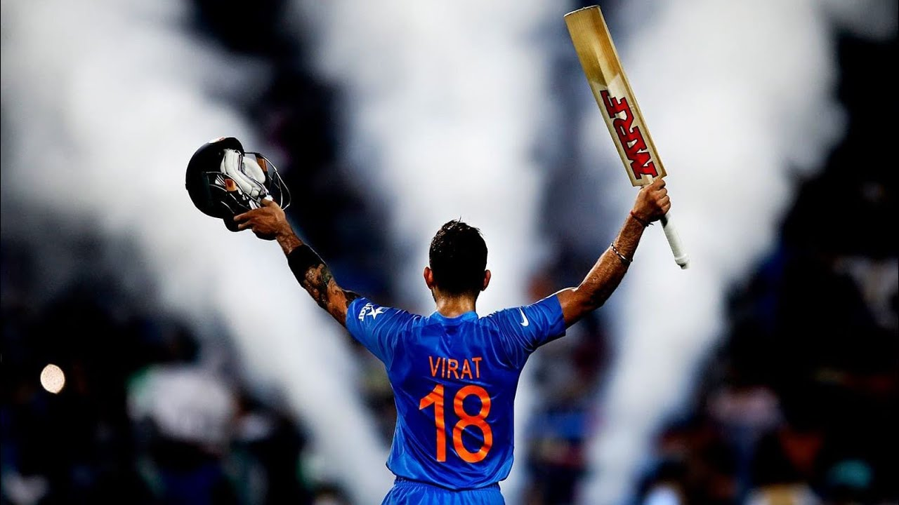

This is virat kohli.
| Name: |
virat.kohli. |
| Borndate: |
5th of nov. |
| Age: |
32 |
| Education: |
10th paasout. |
| Fathers name: |
Prem.kohli. |
| Mothers name: |
Saroj.kohli. |
| Present work: |
Cricketer. |
| Wife name: |
Anushka.kohli. |
| Ranking: |
| In T20: |
4th. |
|---|
| In ODI: |
1st. |
|---|
| In Test: |
1st. |
|---|
Moments:

virat kohli's performance for India.
| |
Test |
ODI |
T20 |
IPL |
| Matches |
90 | 251 | 84 | 192 |
|---|
| Innings |
152 | 242 | 79 | 184 |
|---|
| Runs |
7490 | 12040 | 2928 | 5878 |
|---|
| Average |
52.75 | 59.31 | 50.48 | 38.17 |
|---|
| Strike rate |
57.16 | 93.25 | 138.44 | 130.74 |
|---|
| Highest runs |
254 | 183 | 94 | 113 |
|---|
| Not out |
10 | 39 | 21 | 30 |
|---|
| 100s |
27 | 43 | 0 | 5 |
|---|
| 50s |
25 | 60 | 25 | 39 |
|---|
| 4s |
839 | 1130 | 265 | 503 |
|---|
| 6s |
22 | 125 | 81 | 201 |
|---|
My openion about him.
Virat.kohli
he is my favourite player in all formate of cricket.I only love to follow virat kohli because i like every thing what virat kohli doing.he is my idol,my insperation and my hero.my strongest dream is to meet one time with virat.I like his attitude,his hardworking,his skills,his body language.
The End